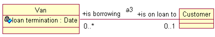

People often think that the right place to start an analysis is in front of a computer running a UML modelling tool. This approach is tempting but wrong, for several reasons.
The first thing to do is to work out what the problem domain is and what the constraints (performance, safety, security, environment, legal etc) are. In an older (some would say, more mature) way of doing things, this would have been an appropriate time to produce an SRS and an SDD. In the UML world, this need is possibly best met by using Use Cases or at least user stories, with at least two intended audiences:
However, remember that Use Cases only make up about 30% of a typical requirement statement.
Even when the requirements are clear, it's still not time to start drawing UML models on the computer. It usually takes several iterations before you have a model that begins to reflect the problem domain, and it's much cheaper to sketch it out, in pencil or (not so good) on a whiteboard. Modelling in a tool offers far too much opportunity to waste time by making a bad model look good, and also gives a spurious air of correctness which a pencil sketch in your notebook doesn't. Make notes! Especially, make notes on why a particular design didn't work! You might find that a Wiki- or blog-based approach works for this phase, provided it's acceptable in your workplace.
The modeller's job is to understand, and make clear to the reader, what each entity in the model means and why it is there. This will mean writing clear descriptions of the classes, the attributes, the associations and the roles. Unfortunately, documentation in the model probably won't be enough. The model is essentially flat, and the reader needs some guidance on how things fit together; some sort of roadmap. Internal use cases, possibly expressed in sequence diagrams, may help here, but it's a bad idea to insist on too high a level of detail too soon (for example, insisting on defining operations rather than messages).
High-level languages such as Ada and C++ show the benefits of strong typing; it makes it easier to write code that 'does the right thing', if done properly, because it constrains the code that can be written so that many mistakes can be caught by compilers.
A crisp UML model offers similar benefits.
A good model is like a scientific hypothesis: it should be possible for it to be proved wrong. I could say that the identifier of Car was its licence plate number, which would be a reasonable first stab in the UK; but it turns out that you can swap licence plate numbers if you pay enough. Perhaps a Vehicle Index Number would do? well, yes, provided you don't care about cars made before VINs were invented. And not many people know their car's VIN. Our problem domain may allow the licence plate number after all; if you're running a car fleet you're not going to be changing the numberplates! (unless you have a limo and bought a special plate for it. I think A1 is taken but you get the idea ...)
Vagueness is a bad thing in a model. If your project is a van-rental business, your customers borrow vans. At any time, each customer is borrowing zero or more vans.
What about the vans? Clearly a van can only be on loan to one customer at a time; on the other hand, it may not be on loan at all. So we could try this ...

... which is true but perhaps not as true as it could be. For example, if the van's on loan, we want to know when the loan terminates. This could be held in a Van attribute loan termination of type Date.
But what happens when the van isn't on loan? Now loan termination is meaningless.